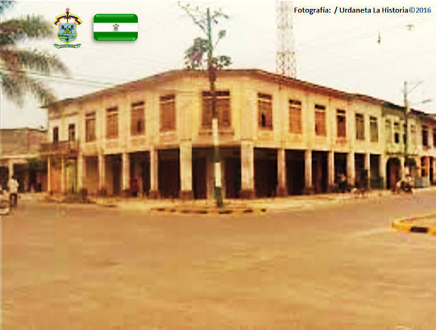
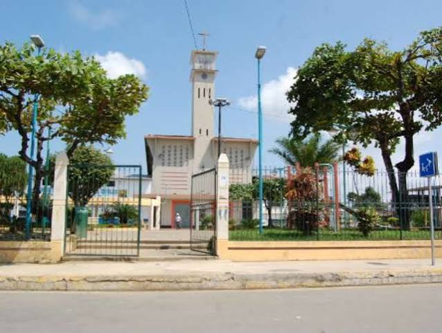
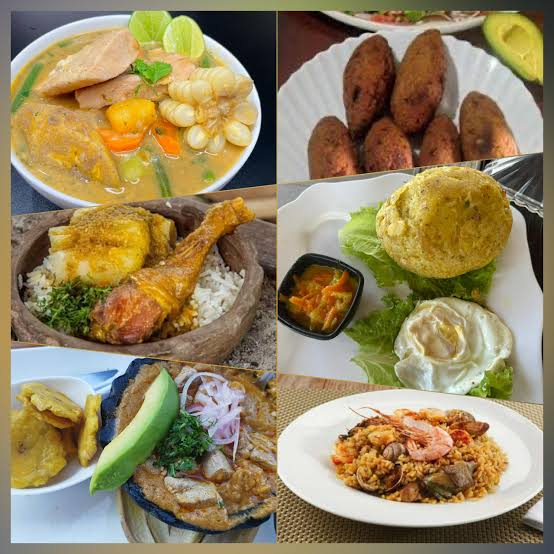
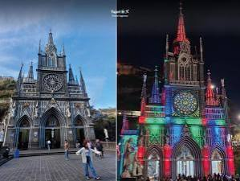
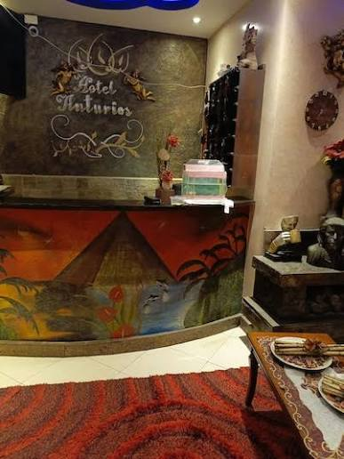
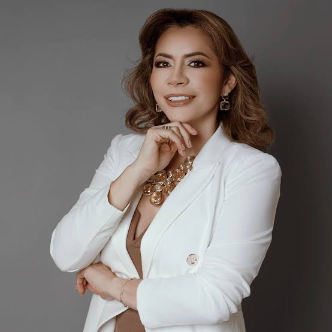
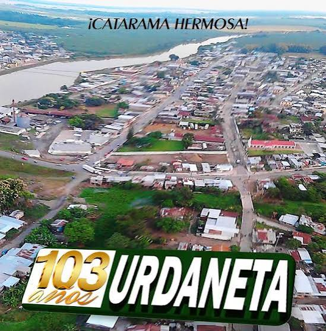

Bienvenido a la página oficial del cantón Urdaneta. Con su cabecera cantonal Catarama, esta zona es altamente valorada por su gran producción agrícola, su comercio fluvial histórico y la amabilidad de su gente trabajadora.

El cantón fue creado oficialmente el 11 de octubre de 1913, rindiendo homenaje con su nombre al ilustre prócer de la independencia, general Luis Urdaneta. Catarama, su centro urbano principal, ha sido históricamente un puerto fluvial estratégico.

Urdaneta cuenta con una organización territorial que abarca zonas urbanas y rurales:

La culinaria tradicional de Catarama y Urdaneta se caracteriza por los potajes montubios y de río:

Sobresalen el malecón de Catarama a orillas del río, los balnearios de agua dulce muy concurridos en temporada seca, y la arquitectura tradicional de sus calles céntricas.

Dispone de hostales familiares y residencias urbanas que brindan un espacio cómodo para visitantes y comerciantes que recorren la zona.

Alcalde: Amada Zambrano Rodríguez

Alberga a más de 30.000 habitantes, destacando por su identidad montubia, su esfuerzo diario en las labores agrícolas y su dinamismo comercial.
Se encuentra ubicado en la zona sur-oriental de la provincia de Los Ríos, limitando con los cantones Babahoyo, Ventanas, Puebloviejo y la provincia de Bolívar.